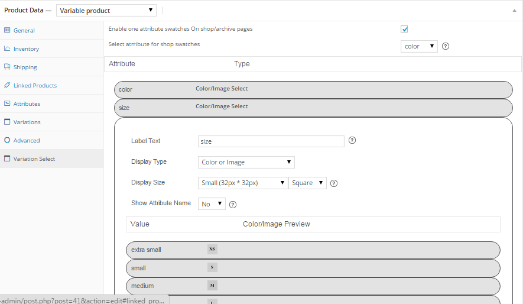

1. Getting Started
1.1- How to Install
FIrst unzip the file you downloaded from codecanyon. You will see three folders documentation,Licensing and Plugin . Plugin folder contains zipped file of plugin . Move that file to your desired location and remember that location.
Step 1: Go to your wordpress admin dashboard.

Step 2: Click on add new under plugin menu

Step 3: Click on “Upload” as shown in image

Step 4: Click On choose file and choose your plugins zip file from the location where you saved and click on install now.

Step 5: Click on Activate as shown in the image.

Step 6: Now plugin is ready to use.Now open any variable product and visit "variation select" tab and design your variation selects there.
2. How to use it
Open Product edit page of any Product on which you want to use image or color select and choose variable product. Upon selection of variable product you will see an extra tab with name "variation select".

If you haven't added attributes and setup variables then visit first attributes tab and set up attribute like this.

And then visit variations tab and setup variation product and then update the post. Make sure you have set the prices for variations and after updating product , variable product works with default dropdowns.

Now visit "variation select" tab and click on the attribute to configure its display.

To replace default select you must select color or image for display type. Selecting none will display default dropdown select.

select display size and other display related option next.

Now click on each attribute value to setup color or image for each attribute.

Done. now open product to test everything from front-end
3. How to
3.1- How to enable swatches on all products at once
Note :- to use this feature you must have version 1.9.0 or higher of "woocommerce color or image variation swatches" plugin.
To enable this feature visit swatches tab under woocommerce/settings menu and enable checkbox "Enable default attribute options". Upon checking it you will see another table where you can configure your global attribute options.

Please remember that this feature will work only for products which does not have display type set. if you have existing products with "custom color or image swatches " as display type then global changes will not affect it but you can always change display type to "global values" in variation select tab to make global values work on those products. "global values" option in display type dropdown will be available only to attributes that are created under product/attribtues not for "Custom product attribute"(which you separate via "|").

3.2- How to use custom size for product swatches
First visit swatches tab under woocommerce/settings menu and define custom product swatches height and width there.

Then select custom as display type while configuring into variation select tab.

4. Global Attribute color or Image
First you need to setup global image or color for each attribute values.To do that visit attributes tab under products menu and add your attribute like this.

Once Attribute is added , click on settings icon to define its options.

Now add the options as shown in the image.

Once color or image value for all usable attribute and its options are set , you can use it on product.To use it on products visit attributes tab and select "color" inplace of custom product attributes and then click on add

Set your variations now by visiting variations tab and then visit variation select tab and select image or color in place of dropdown select and update the product.thats it now frontend will replace image or color with default select .


5. Shop/Category Page swatches
5.1- How to use
To display one attribute swatches on shop/category pages you need to check the "Enable one attribute swatches on shop/archive pages " checkbox in variation select tab and then select the attribute in next option as shown in the below image.
Note :- To make this feature work you must select "Custom Color or Image Swatches" as display type.

You can also upload the hover image for each option of that selected attribute. Once hover image is set , plugin will replace the hover image with product image on swatch hover on shop/category pages.

5.2- Change swatch size on shop/category pages
To change swatches size on shop/category page , visit swatches tab under woocommerce -> settings and define your preferable width and height.

6. Troubleshoot
6.1- Plugin options not get saved
This usually happens when number of inputs(form fields) on your page is higher then allowed number of input by your server.
Problem get solved in most of such cases by increasing max_input_vars .
Newer versions of PHP implement a php.ini directive called max_input_vars usually set to 1000. This means that posting > 1000 form fields for instance would be truncated preventing data from being saved.
This can be changed in php.ini file
max_input_vars = 2000
If you are on shared host you can increase it via .htaccess file
php_value max_input_vars 2000
If you are not familiar with php.ini or .htaccess files ,open a ticket with your host and tell them to increase max_input_vars in php.ini file.
Read more on this here
http://docs.woothemes.com/document/problems-with-large-amounts-of-data-not-saving-variations-rates-etc/6.2- Wrong dimension for swatch hover images
Catalog image dimensions is a woocommerce feature. If you are experiencing wrong dimensions for hover images , you will need to set the correct dimension for catalog images at products/display under woocommerce/settings menu.

After changing it you may need to regenerate product thumbnails using this plugin.
https://wordpress.org/plugins/regenerate-thumbnails/
If you still getting same dimensions on shop page check media settings page configuration. For example - if you are getting 150*150 dimension on hover images and media settings page has 150 * 150 thumbnail size. try changing it and regenerating thumbnails using aforementioned plugin.

7. Version Compatibility
This plugin requires woocommerce version 1.6 or higher version.
8. Support
To get support please contact us here.
9. Get Updates
Step 1:- To activate update within wp-admin dashboard visit Settings tab under wooocmmerce/settings/products/display menu and enter your valid envato item purchase code.

Step 2:- Now visit all plugins page and click on the check for updates link below this plugin.

if update will be available you will get update information below this plugin. click on update now link to update the plugin..